Structured, module-by-module video courses on topics I work with every day: graph-based retrieval, agent memory and distributed system design. Each module is a self-contained video of roughly 15 to 35 minutes, and every course is a public YouTube playlist you can follow in order.
Start with the one that matches where you are. Pick the microservices course for architecture fundamentals, or begin the GraphRAG series if you already know basic RAG.
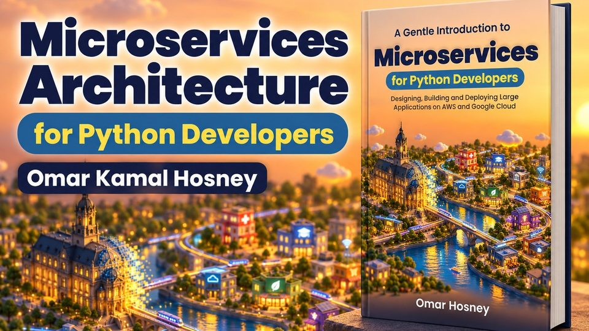
▶You can build a web app in Python, but you've never designed a distributed system. This is a high-level, architect's-eye course on how large applications are designed, decomposed, built and deployed as microservices on AWS and Google Cloud. It follows the book A Gentle Introduction to Microservices for Python Developers, one module per major part of the book.
Who it's for: Python developers and aspiring architects who want the big picture before diving into frameworks.
Watch the full playlist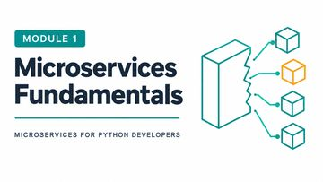
Module 1Microservices FundamentalsWhat microservices are, how they differ from a monolith, and when the trade-offs are worth it. 18:07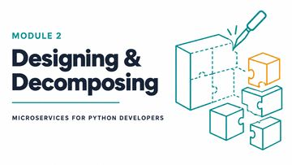
Module 2Designing & Decomposing a Large SystemHow to break a big system into services with clear boundaries and responsibilities. 16:58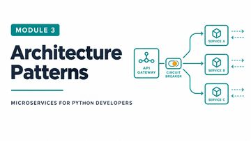
Module 3Microservice Architecture PatternsThe recurring patterns that make a set of services work together reliably. 19:27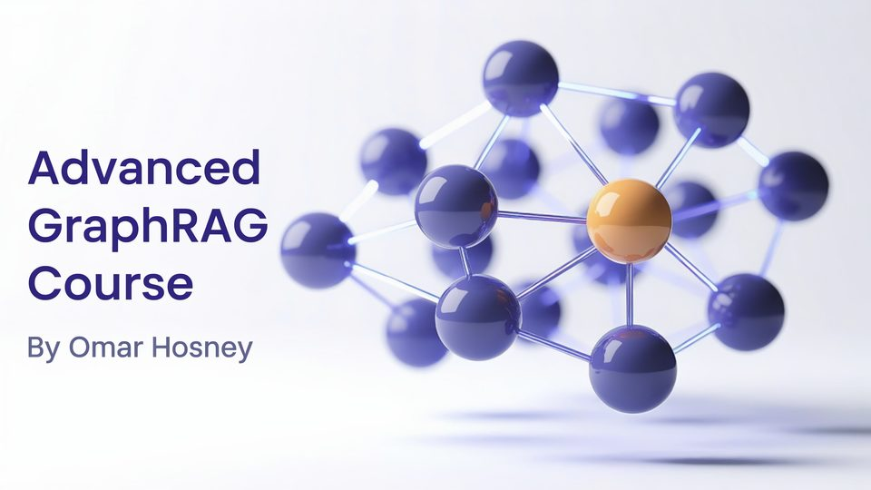
▶A friendly, in-depth course on building structured, graph-based retrieval systems, from first principles to production multi-agent pipelines. It starts with why plain vector RAG hits a ceiling, then walks through the major GraphRAG families: ontology-driven graph construction, Microsoft GraphRAG and DRIFT, LightRAG, HippoRAG, LinearRAG, AGRAG and StructRAG, finishing with multi-tiered architectures and benchmarks.
Who it's for: Engineers and data scientists who already know basic RAG and want to go deeper into graphs.
Watch the full playlist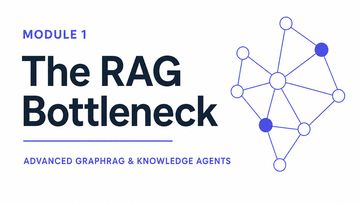
Module 1The RAG Bottleneck & Evolution of Graph-Based RetrievalWhere flat vector retrieval breaks down, and how graph-based retrieval evolved to fix it. 13:08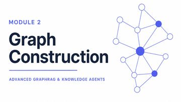
Module 2Ontological Foundations & Graph ConstructionTurning raw text into a knowledge graph with LlamaIndex and Neo4j. 13:47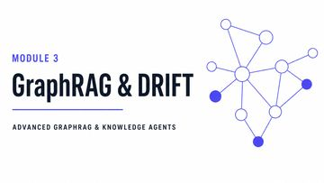
Module 3Hierarchical Community Indexing & Global-Local SearchMicrosoft GraphRAG and DRIFT: community detection, summaries, and global versus local queries. 18:54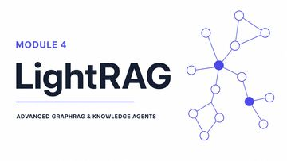
Module 4Dual-Level Retrieval & Incremental UpdatesLightRAG: dual-level retrieval and updating a graph without rebuilding it. 16:51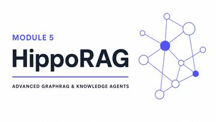
Module 5Neurobiologically Inspired Long-Term MemoryHippoRAG: hippocampus-inspired indexing and Personalized PageRank retrieval. 20:35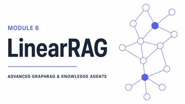
Module 6Relation-Free Hierarchical Graph ArchitecturesLinearRAG: building a graph without extracting relations. 19:53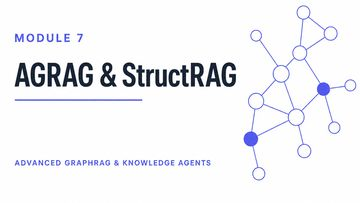
Module 7Minimum Cost Subgraphs & Inference-Time StructuringAGRAG and StructRAG: picking the cheapest useful subgraph and structuring knowledge at query time. 20:14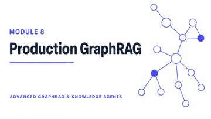
Module 8Multi-Tiered Architectures, Workflows & BenchmarksPutting the pieces together into multi-tier pipelines and measuring them with GraphRAG-Bench. 25:12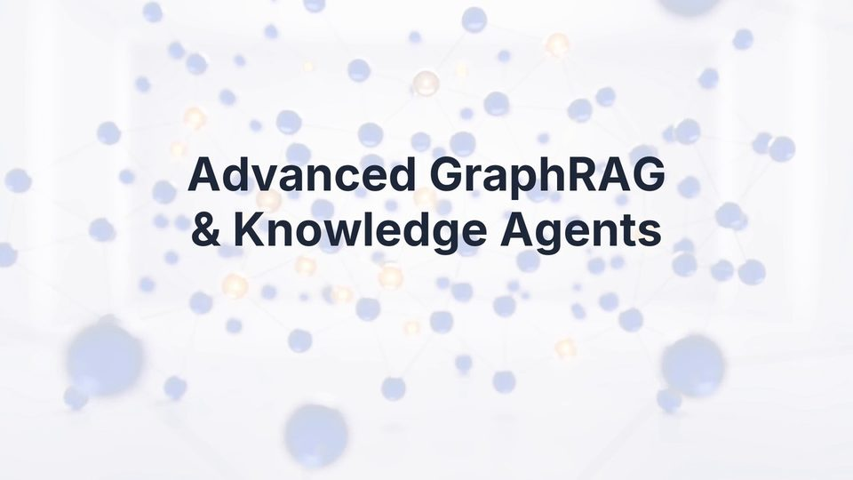
▶The sequel to Part 1 covers the next five families of graph retrieval. It begins with LazyGraphRAG, which defers the cost of indexing, then spends a long module on temporal and agent-memory graphs (two clocks, validity intervals, contradiction handling, Graphiti and Zep, and the wider memory-system landscape). It closes with learned graph retrievers, hypergraphs and agentic graph traversal.
Who it's for: Anyone who finished Part 1, or who is building agents that need memory that changes over time.
Watch the full playlist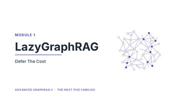
Module 1LazyGraphRAG: Deferring the Cost of UnderstandingBuild a usable graph with zero LLM calls at index time and pay for understanding only when a question arrives. 24:34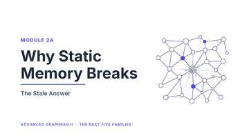
Module 2AWhy Static Memory BreaksReal agents accumulate facts that change. Why a graph that assumes a still corpus ends up confidently wrong. 13:07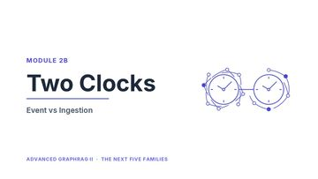
Module 2BTwo Clocks: Event Time vs Ingestion TimeEvery fact has two timestamps: when it happened and when you learned it. 15:12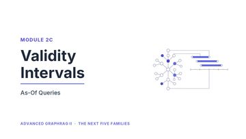
Module 2CValidity Intervals & As-Of QueriesEdge validity fields, and asking both what was true on a date and what you believed on it. 17:56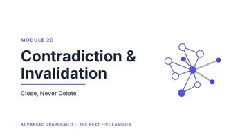
Module 2DContradiction & InvalidationWhat to do when a new fact disagrees with a stored one, even when they share no words. 13:24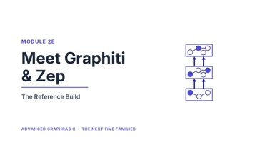
Module 2EMeet Graphiti & ZepA system that implements the whole temporal-memory specification built up so far. 18:39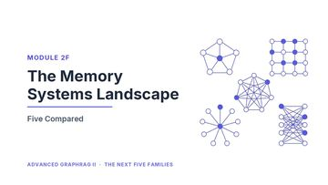
Module 2FThe Memory Systems LandscapeMem0, A-MEM, G-Memory and ATOM: what each is and the one idea that makes it different. 16:39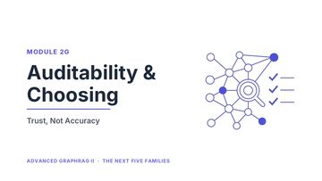
Module 2GAuditability & Choosing Your MemorySAGE and MOSS on trust and auditability, plus how to choose a memory system with no common leaderboard. 16:32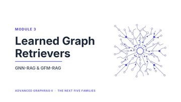
Module 3Learned Graph RetrieversGNN-RAG and GFM-RAG: retrievers that are trained rather than computed in closed form. 25:49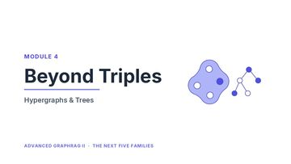
Module 4Beyond Triples: Hypergraphs, Atoms & TreesRepresenting facts that are not binary, with hypergraphs, atomic facts and tree structures. 28:44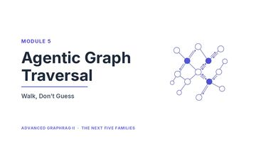
Module 5Agentic Graph TraversalThink-on-Graph, KAG and Structure-R1: retrievers that walk the graph, look, decide and look again. 36:17New modules are added to these playlists as they are published. Subscribe on YouTube to follow along.